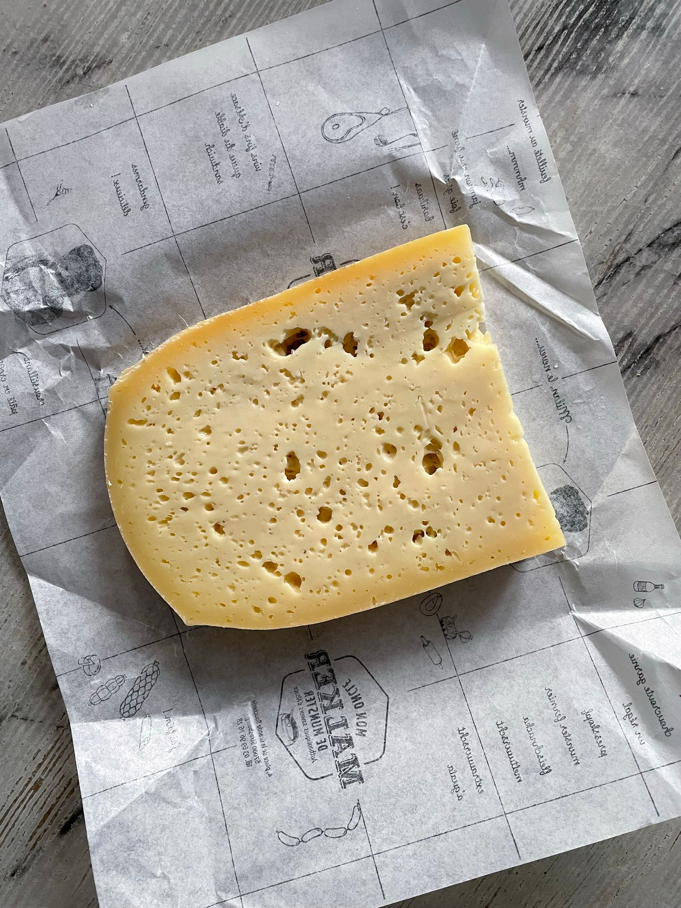
Noord-Hollandse kaas
100% Noord-Hollandse weidemelk, van historische grond met smaak van traditie.
Ontdek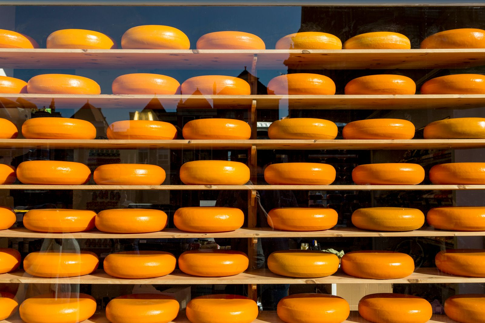
Onze koeriers staan elke week op de markt met de lekkerste Noord-Hollandse kaas, ambachtelijke boerenkaas, milde geitenkaas en bijzondere buitenlandse specialiteiten. Persoonlijk advies, een plakje proeven en altijd vers gesneden.
Geen webshop, maar het echte werk: kaas vers gesneden aan de kraam. Bekijk op welke markt onze koeriers welke dag staan en kom langs voor een plakje.
Alle markten bekijkenVan streekeigen Noord-Hollandse kaas tot een spannende vondst uit het buitenland. Onze koeriers kopen scherp in op kwaliteit en verversen het assortiment met de seizoenen.
De Kaaskoerier is geen winkel maar een markttraditie. Zelfstandige ondernemers, herkenbaar aan dezelfde kraam en hetzelfde vakmanschap, staan elke week op de markt om jou de beste kaas te brengen.
Bij ons proef je altijd een ander kaasje ter vergelijking. Smaak is nu eenmaal subjectief. Zo gaan mensen met de juiste kaas naar huis.
Persoonlijk advies en eerlijke kwaliteit zijn ons handelsmerk. Geen anonieme schappen, maar een gesprek aan de kraam.
Maak kennis met onze koeriers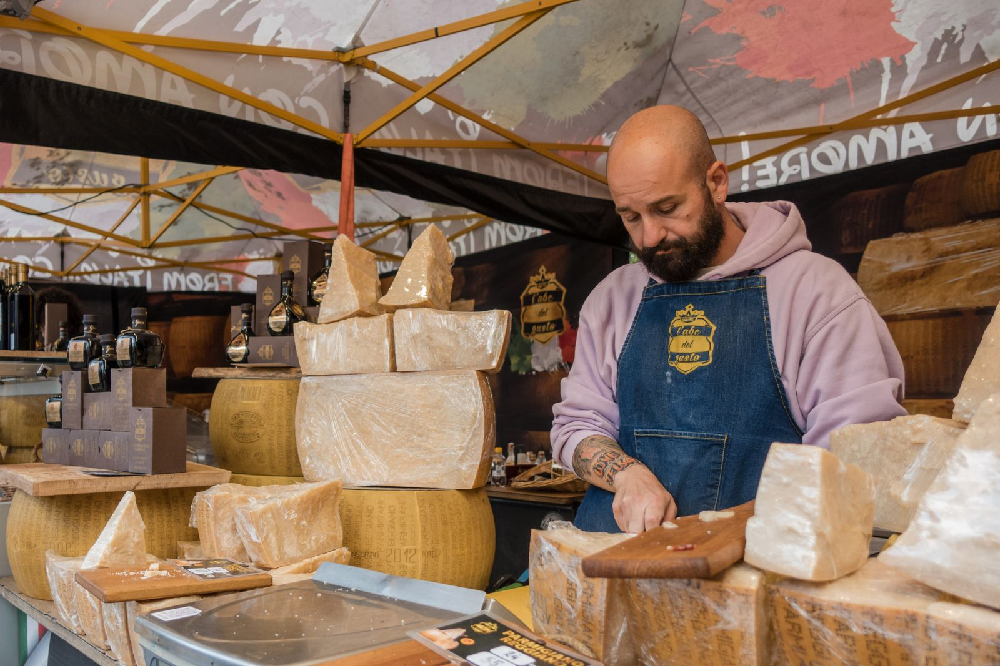
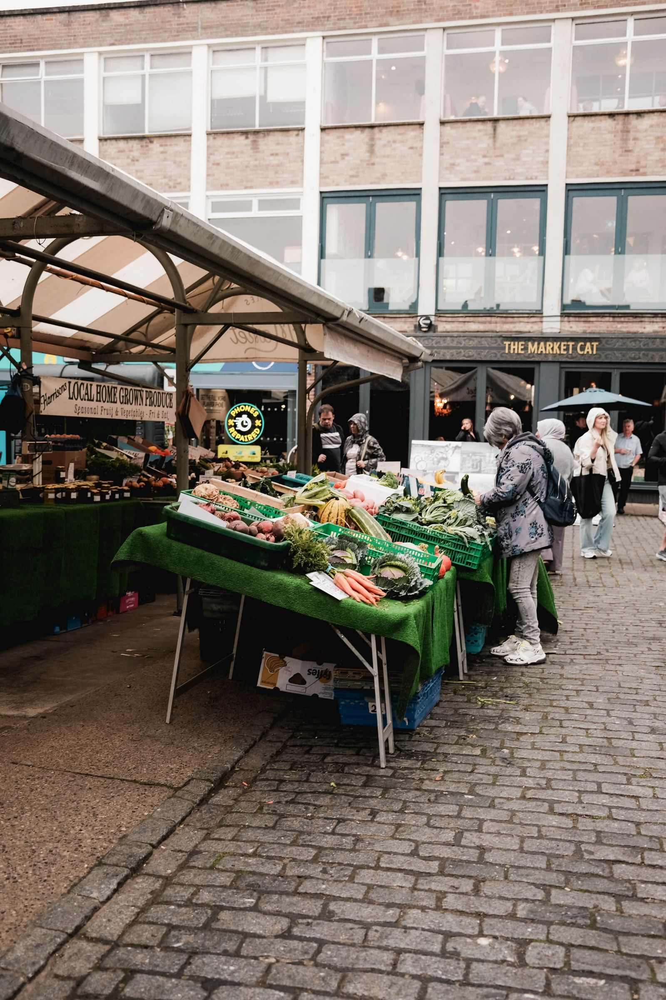
Vers van het mes gesneden, nooit voorverpakt blijven liggen.
Scherp ingekocht op kwaliteit, met seizoenskazen die je nergens anders vindt.
Eerst proeven, dan kiezen. Persoonlijk advies van een echte kaaskenner.
Haal de kaas deze week aan de kraam en maak er thuis iets bijzonders mee. Onze koeriers delen hun favorieten.
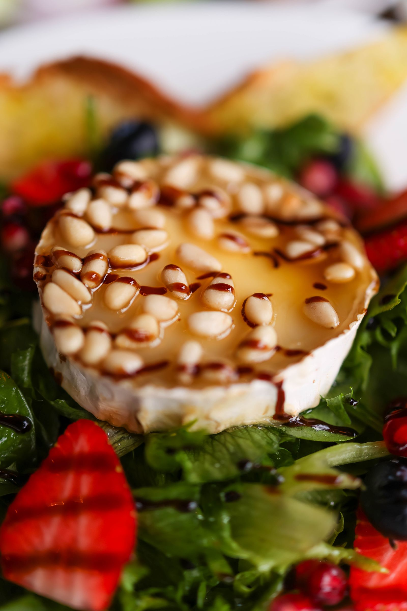
25 min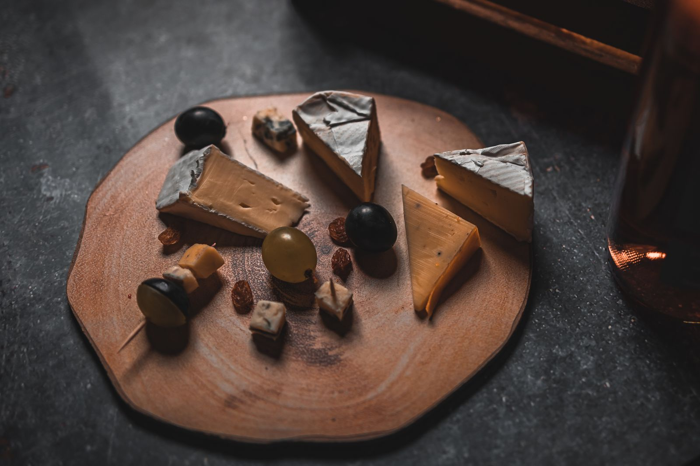
borrel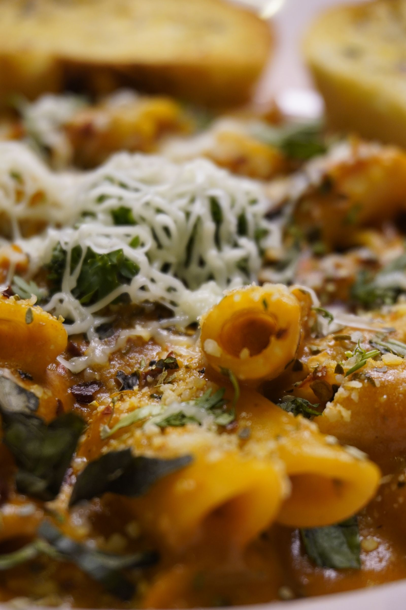
35 minDe lekkerste oude kaas die ik ken. En altijd even proeven voordat je kiest.
Vaste klant op de vrijdagmarkt. Persoonlijk advies en altijd een praatje.
Eindelijk weer echte boerenkaas met smaak. Niet die smaakloze supermarktkaas.
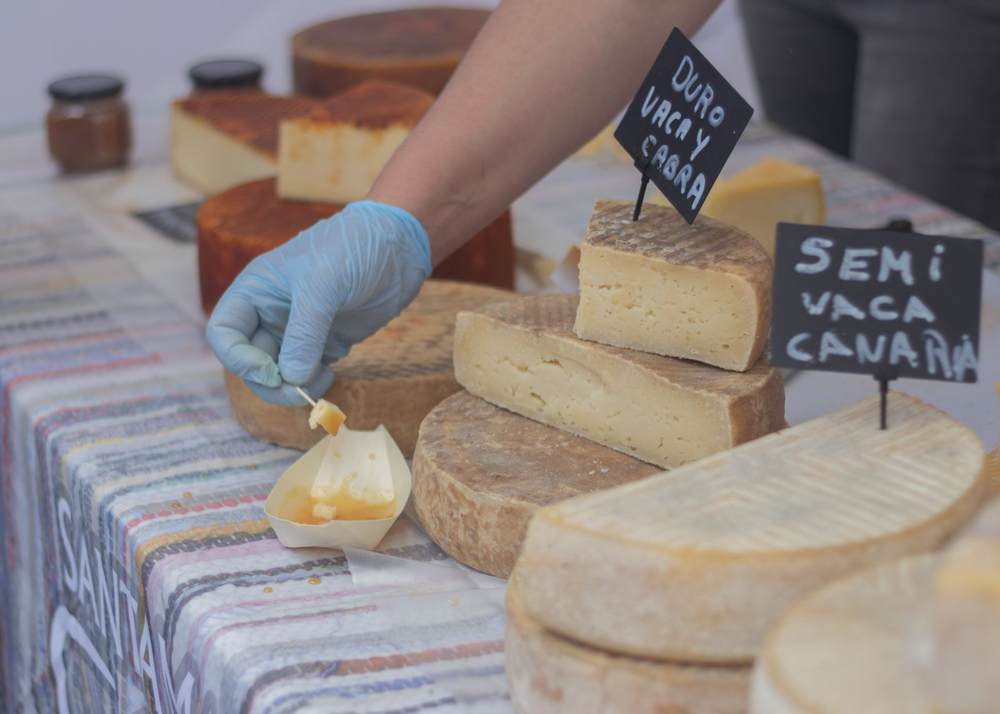
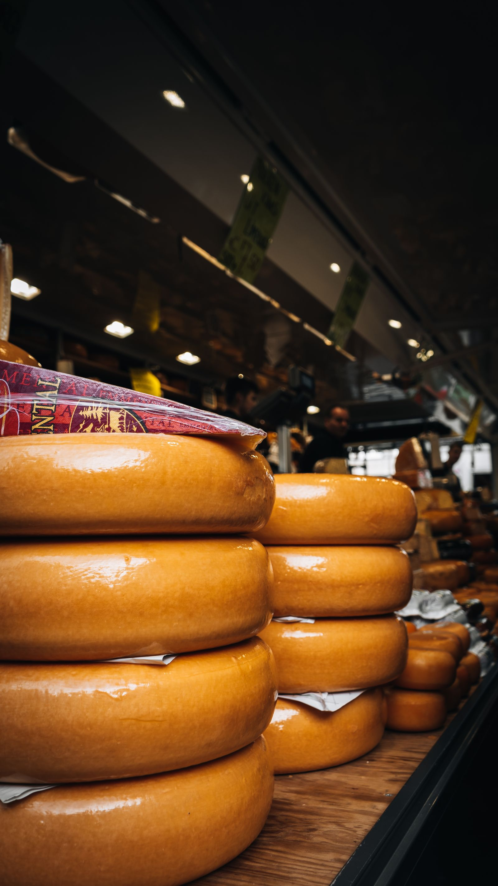
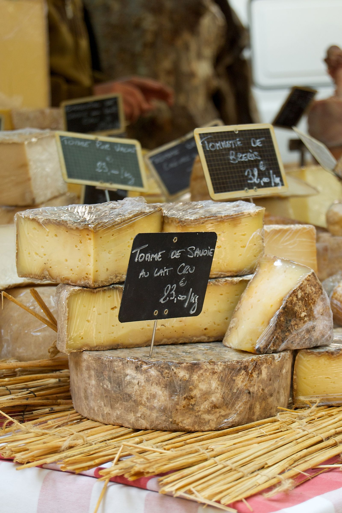
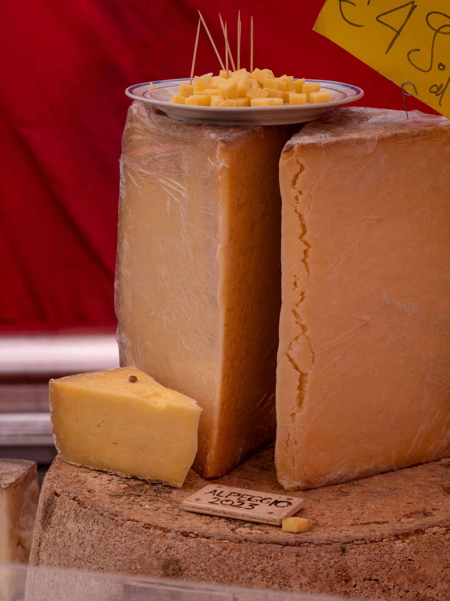
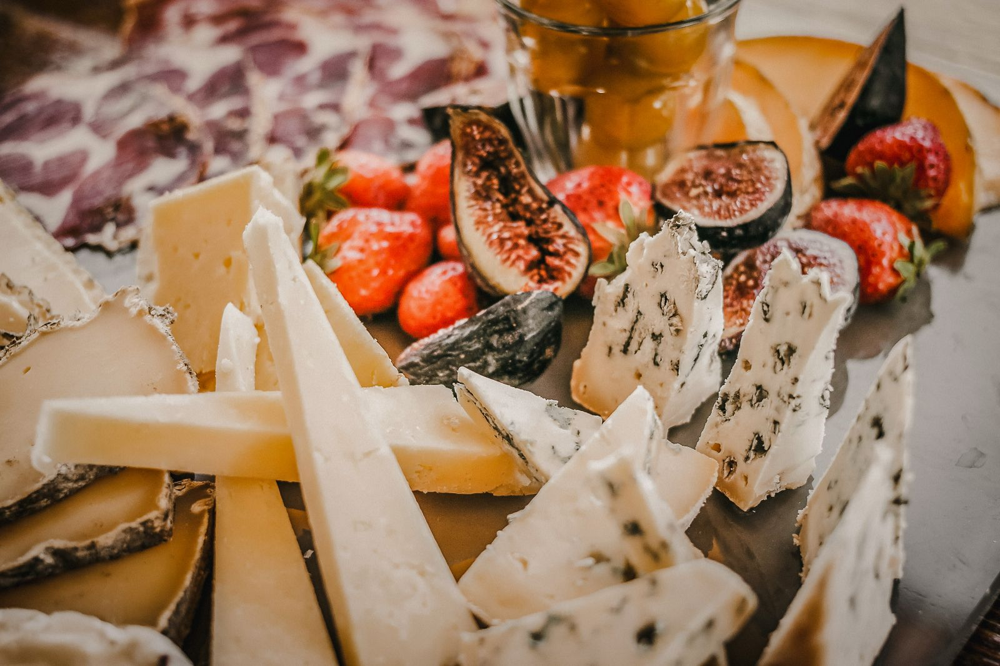
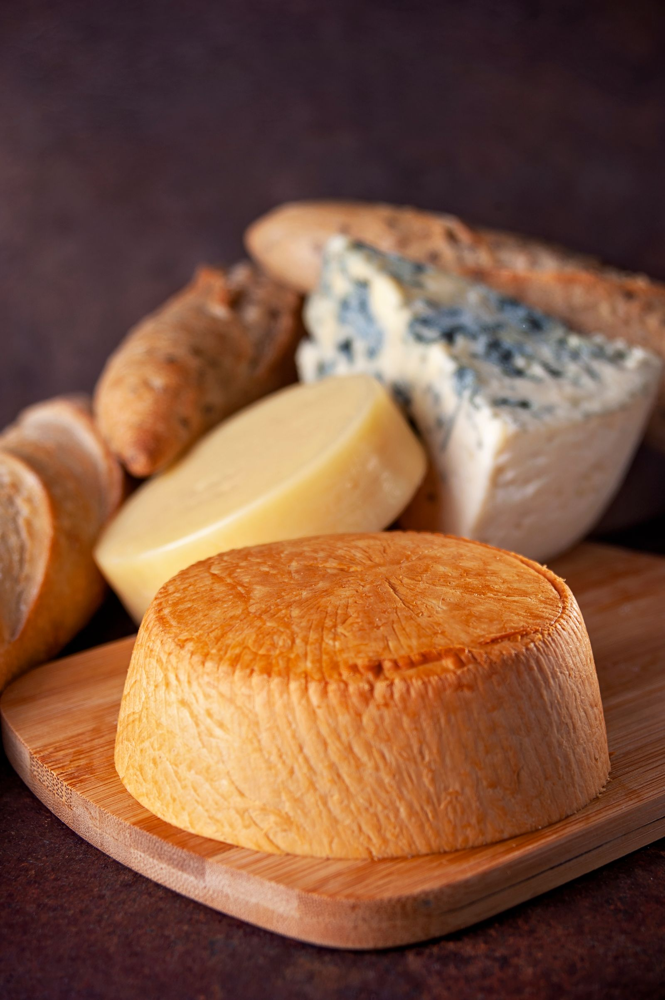
Vind de Kaaskoerier bij jou in de buurt en kom deze week langs voor een vers gesneden plakje.
Vind je kraam